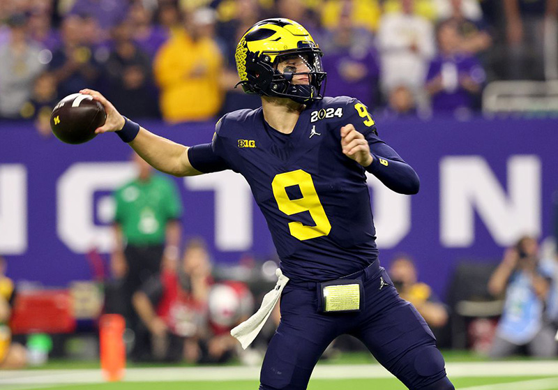
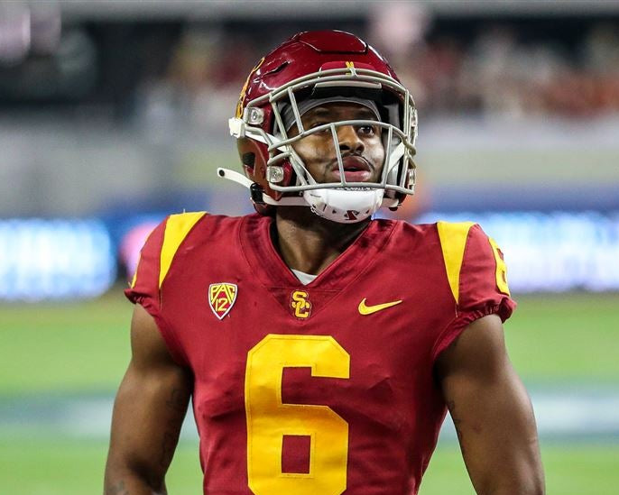

Adam Thielen er kommet hjem til Vikings efter 2 år i Carolina Panthers. Vikings betaler kun et 4 runde pick i 2027 draften for ham, så det er bestemt et godt trade, da Vikings mangler recievere her i starten af sæsonen. Jefferson er småskadet, det sammen er Nailor. Addison har 3 kampe karantæne - så Thielen forventes at skulle starte inde.
Thielen er en stor fan favorit i Minnesota, men udover det har han også trænet sammen med J.J. McCarthy i offseason, så de må kende lidt til hinanden.
Selvom Thielen er 35 år, håber og tror jeg han kan gøre en forskel i Vikings og hjælpe til både inde på banen og udenfor banen.
Artiklen er skrevet d. 05 september 2025
Vikings Draft 2025
Vikings draftede til fordel for JJ McCarthy, som pga. skade sad på bænken hele sidste år og nu skal vise om han kan blive en franchise QB for Minnesota Vikings.
Pick 1 - Round 1, Pick 24 - Donavan Jackson, OL
Vikings draftede den store og stærke guard Donavan Jackson fra Ohio State. Det forventes at han kan starte inde fra dag 1 og dermed være med til at give JJ McCarthy en god start, på sin forhåbentlige lange nfl karriere hos Vikings.
Pick 2 - Round 2, Pick 102 - Tai Felton - WR
Vikings pick 2 er endnu en spiller, der forventes at starte fra dag 1, WR Tai Felton, som især skulle være tænkt som kick off returner, men også som WR 3 eller 4. Han kan især være nytting i starten af sæsonen, hvis Addison får karantæne for de ulykker - DUI - han lavede i off season.
Det var ikke den mest spændende draft set med lilla øjne, men jeg er glad for de prioriterede beskyttelse til JJ McCarty - så er dét i hvert fald ikke en undskyldning for hvis han spiller dårligt!
Artiklen er skrevet d. 5 maj 2025
Vikings 2024 sæson er slut!
Sæsonen startede med 5 wins og inden Lions kampen i sidste uge, var Sam Darnold én af de helt store overraskelser i ligaen. Men efter Lions kampen og nattens kamp imod Rams, er han nok knap så eftertragtet mere. Han spillede nogle virkelige dårlige 2 kampe og han evne til at træde op i lommen, når o-line kollapsede omkring ham, havde han ikke i disse 2 kampe.
Han holdte bolden alt for længe og tog nogle virkelige dårlige beslutninger - jeg udbrød i nat "hvor skal han hen? hvorfor løber han mod egen end-zone?. Han blev sacket 9 gange, hvilket næsten var en ny record for sacks i play-off - ikke bare for Vikings men hele ligaen overall.
Selvom vi herhjemme (mig og William) har været meget glad for Danish Darnold i løbet af sæsonen, så nytter det ikke noget når han slet ikke kan præstere i de vigtige kampe. Måske det kunne være en god ide at lade ham blive og spille for Vikings i første halvdel af næste sæson, så J.J. McCarthy kan lære lidt mere og tage over sidste halvdel af sæsonen.
Artiklen er skrevet d. 14 januar 2025
Depth Chart Dec. 2024
Minnesota Vikings depth chart ser ud som følgende, lige før de skal møde Packers her på søndag i en meget vigtig kamp.
Offense
QB
Sam Darnold, Nick Mullens, Brett Rypien, J.J. McCarthy (IR)
Vikings tradede op i årets draft for at kunne vælge en QB med pick nr. 10, hvilket er første gang i Vikings historie.
Pick 1 - JJ McCarthy, QB

Vikings tradede up fra pick nr. 11 til 10 for at drafte QB JJ McCarthy fra Michigan Wolverines. Der var andre hold, som muligvis ville trade up til plads 10 for at tage McCarthy, men det lykkedes altså for Vikings at lave en handel med Jets og vælge McCarthy, som kan starte hos Vikings bag Sam Darnold og stille og roligt lære NFL at kende.
Pick 2 - Dallas Turner - LB
Vikings lavede endnu et trade og valgte med deres pick nr. 17 Dallas Turner, som er en edge rusher, der skal erstatte tabet af Danielle Hunter i de kommende sæsoner.
Pick 3 - 6
Pick 3 - Jay Ward - S
Pick 4 - Jaquelin Roy - NT
Pick 5 - QB - Jaren Hall
Pick 6 - DeWayne McBride - RB
Konklusion
???
Artiklen er skrevet d. 26 marts 2024
Free Agency 2024
Vikings Free Agencys højdepunkter:
Vikings har hentet RB Aaron Jones fra ærkerivalerne Green Bay Packers. Indtil videre er han nr. 1 RB på Vikings Depth Chart, da Vikings har fritstillet Alexander Mattison for nyligt og som blev samlet op af Raiders. Det virker umiddelbart som en rigtig god handel, men jeg kan godt mistænke Jones for, at have haft sine bedste år i NFL bag sig, men håber han overrasker mig positivt.
Kirk Cousins aka Captain Kirk er fortid i Vikings. Han er skiftet til Atlanta Falcons og Vikings har derfor signet QB Sam Darnold. Darnold blev draftet som pick 3 i første runde af 2018 draften, men levede aldrig op til de høje forventninger og har været en del rundt i NFL siden. Vikings drafter højst sandsynlig en QB i 1 runde i årets draft, så han er nok mest hentet som backup.
Danielle Hunter har også forladt Vikings til fordel for Texans. Men før han smuttede, signede Vikings DE Jonathan Greenard fra netop Houston Texans. Han havde en rigtig god sæson for Texans sidste år og han er en af de bedste unge defensive ends, så det virker som en rigtig god signing for Vikings.
Derudover er LB Andrew Van Ginkel kommet til klubben fra Dolphins og han bliver genforenet med Defensive Coach Brian Flores og forventes at blive én af de startende Linebackers for Vikings i den kommende sæson. En anden LB, som er kommet til klubben er Blake Cashman, som også forventes at starte.
Wide receiver K.J. Osborn er blevet signet af Patriots, hvilket jeg synes er ærgeligt, da han havde et stort pontentiale og altid var farlig, når han fik bolden.
Vikings kicker Greg Joseph har skrevet kontrakt med Packers, hvilket måske er meget godt, da han har misset mange spark for Vikings og tit har været grund til banden og svovlen herhjemme.
Artiklen er skrevet d. 01 april 2024
Vikings Draft 2023
Vikings tradede ikke op, så de kunne få en QB, der kan lærer et år bag Kirk Cousins, da det højst sandynligt er hans sidste sæson hos Vikings næste år. I stedet tog de en WR, som skal erstatte Thielen og kan supplere Justin Jefferson. Jeg havde håbet på en QB, da jeg synes at Osborn er en god reciever og Vikings ikke nødvendigvis har brug for en mere.
Pick 1 - Jordan Addison, WR
Er af mange blevet nævnt som den bedste reciever i årets draft. Han er ikke den højeste eller hurtigste, men han løber gode ruter og vil forhåbentlig være en god erstatning for Thielen, som var én af de bedste route runners i ligaen.
Pick 2 - Mekhi Blackmon - CB

Blackmon er en aggressiv mand til mand CB og vil sikkert passe godt ind i Brian Flores nye defense.
Pick 3 - 6
Pick 3 - Jay Ward - S
Pick 4 - Jaquelin Roy - NT
Pick 5 - QB - Jaren Hall
Pick 6 - DeWayne McBride - RB
Konklusion
Som nævnt havde jeg personligt håbet på, at Vikings ville have muligheden for at drafte en af de mange QB, som var tilgængelige i årets draft. Men hvis man ikke tænker langsigtet og mere fokusere på den næste sæson, så er Addison og Blackmon nogle gode picks. Så må man bare håbe at de kan leve og til forventningerne til dem, holde sig væk fra ballade og forbliver skadesfri.
Artiklen er skrevet d. 29 april 2023
Free Agency 2023
Vikings Free Agencys højdepunkter:
Vikings har givet deres nr. 2 RB Alexander Mattison en ny kontrakt. Måske er det et tegn på at Cook ikke kommer til at spille for Vikings igen? Deres nr. 1 RB Dalvin Cook har været meget ustabil og skadet de seneste 2 sæsoner, så Vikings kan frigive en del penge på deres lønloft ved at beholde Mattison og give slip på Cook.
Vikings veteran og flere gange Pro Bowl safety Harrison "The Hitman" Smith er gået med til at gå ned i løn for at kunne bevare sin plads på Vikings holdet. Det kan vise sig at være en rigtig god beslutning at beholde ham på holdet, da han højst sandsyneligt vil fungere som mentor for Vikings top 2022 draft pick Lewis Cine, der var skadet hele sidste sæson.
Der er kommet en ny CB til Minnesota fra Cardinals ved navn Byron Murphy. Murphy blev draftet i 2019 af Cardinal som pick nr. 33. Han var skadet det meste af sidste sæson, men har ellers været en stabil og effektiv spiller for Arizona.
Artiklen er skrevet d. 18 marts 2023
Adam Thielen fritstillet
Vikings har fået endnu mere plads på lønloftet efter de har fritstillet WR Adam Thielen. Han har været en stor del af deres offensive styrker de sidste mange år, så mange vil nok se det som et stort tab. Men Thielens sidste år hos Vikings var præget af mange skader.
Thielen kom til Vikings i 2014 som en undraftet free agent og arbejdede sig op til at blive en af de bedste wide recievers i Vikings franchise historie. Han var en meget stabil reciever, som greb stort set alle bolde, der blev kastet hans vej og ikke mindre, holdte fast i den.
Artiklen er skrevet d. 10 marts 2023
Vikings fritstiller Eric Kendricks
Kendricks har spillet sin ottende og sidste sæson for Vikings i denne omgang. Han blev valgt i anden runde af 2015 draften og har siden dag spillet 113 kampe for Vikings.
Den 31 årige linebacker er blevet fritstillet for at gøre plads i lønloftet hos Vikings. Ud af de 8 sæsoner, sluttede han de syv af dem som førende tackler på holdet, så han er en spiller, der har ydet et kæmpe bidrag til Vikings forsvar og han vil helt sikkert blive savnet.
Artiklen er skrevet d. 8 marts 2023
Hvem er Brian Flores?
Vikings har erstattet deres defensive coordinator Ed Donatell med Brian Flores. Mange husker ham måske for, at være den mand, som sagsøgte 3 af de 32 NFL hold for racisme og forskels behandlig i forbindelse med jobsøgninger i ligaen. Men har er heldigvis også kendt for andre ting.
Brian Flores NFL CV:
Han blev hyret af New England Patriots i 2004 som scouting assistant, han var 23 år. Han var ansat i scouting afdeling i 4 sæsoner, hvor i en af dem Patriots vandt en super bowl.
Han blev forfremmet til special teams assistant for Patriots i 2008 og i hans videre ansættelse ved Patriots var han også linebackers træner og "de facto" defensive coordinator i Patriots 2018 Super Bowl vindende sæson.
Selvom Flores aldrig har været defensive coordinator før han landede jobbet hos Vikings, har han været defensive play caller i fire sæsoner - den første hos Patriots og de sidste tre hos Dolphins.
Det forventes at han vil være med til at skifte lidt ud blandt de nuværende trænere hos Vikings. Hans spil er ofte meget aggresive med masser af blitz, så måske henter han personale ind, som passer bedre til hans temperament.
Artiklen er skrevet d. 8 marts 2023
Vikings Draft Preview 2023
Vikings har pick nr. 24 (men som egentlig er pick 23, fordi Dolphins har fået fjernet deres pick som straf for kontakt til Tom Brady i forrige sæson) i 1 runde i draften 2023 og man regner med, at de vil vælge en cornerback. Men der er andre positioner, som ville være fornuftige for Vikings at kigge på i i draften.
Deres offensive linje har tidligere set værre ud end den gør lige nu, men for at give Kirk Cousins bedre beskyttelse (han blev sacket 46 gange i 22/23 sæsonen), så gør Vikings klogt i af drafte en guard i denne års draft.
Udover det, så har deres center postion være meget omtalt i den netop afsluttede sæson, og ikke på en positiv måde. Derfor er der mulighed for at Vikings vælger at bruge nogen af deres draft picks på én af disse 3 personer:
1 - Tyler Linderbaum, Center
Tidligere bryder hvilket gør, at han kan bruge teknikker fra brydningen til bedre at vinde sine modstanders blokeringer. Han vil formentlig blive draftet som en center, så hvis Vikings ikke beholder Bradbury - som jo havde en dårlig sæson - kan Linderbaum ligne et godt pick for dem.
2 - Zion Johnson, Guard
Johnson er spået til at blive et 1st runde pick. Han er ikke den mest atletiske guard i draften, men han ville kunne bruges til Vikings OL med det samme i den kommende sæson.
3 - Kenyon Green, Guard
En eksplosiv og atletisk guard, som kan spille på postion guard og tackle.
Udover pick nr. 24 (23) i runde 1 har Vikings picks i 3, 4 og 5 runde. Baggrunden for, at de ikke har flere picks til rådighed i år er bl.a. fordi, at de tradede sig til T.J. Hokenson sidste sæson. Hvem Vikings vælger, ja det vil vise sig når draften går i gang d. 27 april i Kansas City.